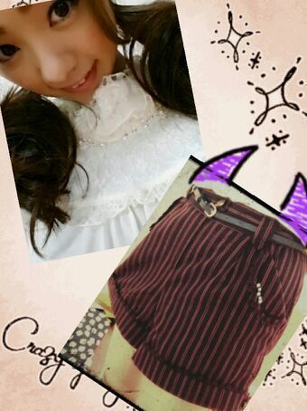

おつかろってぃーん♪(ｏ・ω・)ノ))
こんばんわん.ニャー
皆が今blog見てるのは
おはよー.か こんにちわ.かなあ？
今日も元気く 「Rottyでちゅ!」
ニカッ 。
今日は 東京幕張メッセにて
こべ〜つ握手会でしたね(*´ω｀*)
来てくれた皆 ありがとう !
今日も本当に 楽ちかったよ.
上の写真の様に、皆のおててを
ギュッ♪ と握りしめてきたよ.
選抜発表後の握手会だけど
悲しゅう雰囲気の握手会になんて
まっっったくならなかったよ!
本当に 今日もめっちゃ笑ったの.
皆 優しい 温かい人ばっかだもん(*ノωノ)
最高な１日になったよ〜.
今日来れなかった方も
今度絶対に握手しましょーねん？？？
http://fortunemusic.jp/
次の握手会の応募も もう始まってるから
よかったら ろってぃーと握手してくだちゃい. よろちくどーぞん(ｏ・ω・)？
そして 今日のRotty私服。

はいネックに白色、ビーズにレース ))
パンツも なんか可愛くない？
どぅかな(´・・)
ポケットにも 真珠みたいビーズが
ついてるんだよん
こんな感じ ♪
ふわふわツインに 黒ミミRotty
黒猫ちゃんは ひなぴょんから授かったの.
ひなの握手会が終わって
たまたま外で出会って
「まに、ハロウィンだからつけな？」
って言って貸してくれたの.
ひなぴょん優しい ありがと−
今日は 握手会始まる前から
あにあに と ちーちゃん と ひなちま で
色んな歌かけて 歌ったり踊ったり遊んでたの \(*・ω・)/
とっ‥ても楽ちかった.
んー
ぢゃあ まにまには 明日のために
そろそろ寝るね？
皆 大好きだよ(*ノ_ノ)？
おやすみなしゃい Rottyより...のし